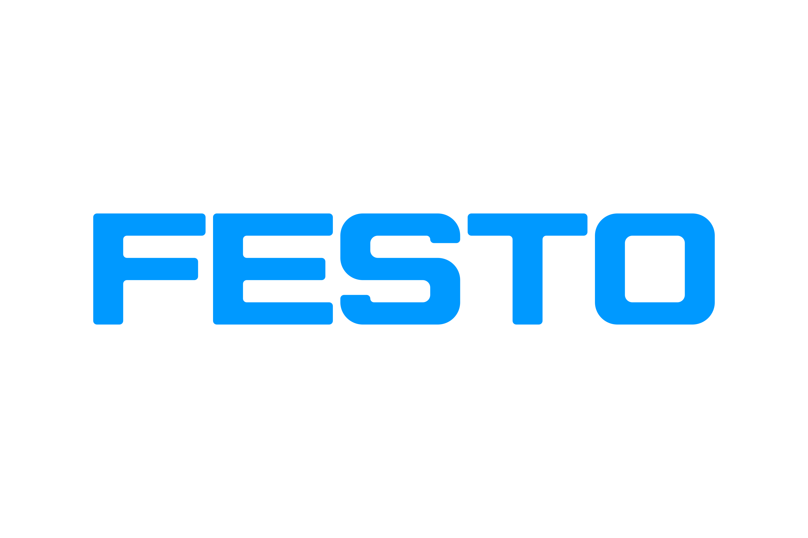

Featured Work
Software Developer Intern — Cognizant/TriZetto
This summer internship involved working on a 9-person agile team to build AI-powered tooling for healthcare contract analysis. I Developed full-stack features using Azure Doc Intelligence, OpenAI, and Azure AI Search, including a React frontend and chatbot that let clients query provider contracts directly. The solution we created cut contract review time by 95% while maintaining 95% accuracy, and we also experimented with agentic AI to configure information onto client websites automatically. Overall, it was a great way to get some real-world experience building AI-powered applications in a professional setting, talking to clients, doing daily standups, and more.

Agentic AI Frontend Generator — Festo Capstone
We built a full-stack application that converts natural language input into functional frontend designs aligned with Festo's design standards, hosted on AWS. The system orchestrates multiple specialized AI agents, more specifically an orchestrator, planning, architecture, frontend development, and integration agents to generate accurate, maintainable, and production-ready code, reducing the manual effort required to prototype and implement compliant UI components from scratch. We presented the project to Festo executives as well as the annual CU Boulder Engineering Expo.
PerfectHomeFinder — AI Home Search Startup
Developed an AI-driven platform to help users find homes by answering natural language queries across a wide range of factors. Built with Flask and transformer models, the platform tested multiple LLMs including ChatGPT, Diablo, and ollama alongside public real estate APIs and datasets to deliver intelligent, personalized property recommendations.
Skills Demonstrated
- React / Full-Stack Development
- Python & Flask
- Azure (Doc Intelligence, AI Search)
- AWS
- OpenAI & LLM Integration
- Agentic AI Systems
- Machine Learning / Transformers
- Agile / Scrum
- REST APIs & Public Datasets
- Natural Language Processing